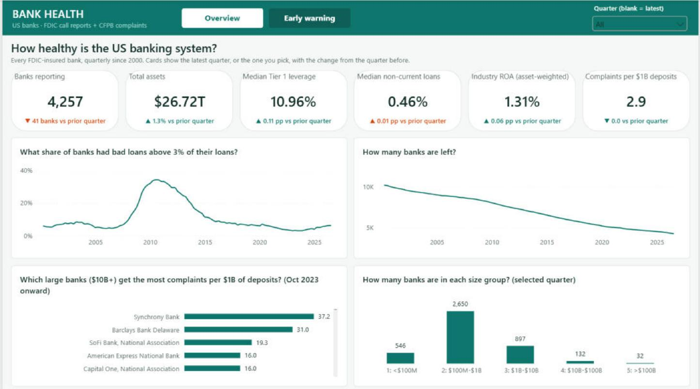

An end-to-end data platform on real public data: 26 years of FDIC call reports for 27,835 banks and nearly 2 million CFPB consumer complaints, moved by Airflow, shaped in Databricks and dbt, stored in Snowflake, scored by an MLflow model and reported in Power BI.

Databricks Free Edition blocks most outbound internet, so Airflow downloads the files and pushes them into a Unity Catalog volume. Watermarks mean later runs only fetch new quarters and new complaint dates.
A bank-quarter counts as distressed if, within 4 quarters, the bank fails, loses money two quarters running, has non-current loans above 3% or Tier 1 leverage below 5%.
| Test 2020–2024 | Gradient boosting | Logistic baseline |
|---|---|---|
| ROC-AUC | 0.854 | 0.742 |
| PR-AUC | 0.357 | 0.222 |
| Caught in riskiest 10% | 53.5% | 39.6% |
Portfolio model on public data, not a supervisory rating.
| Type | What it checks | Latest result |
|---|---|---|
| Unit | Single functions with faked HTTP sessions and files; runs offline | 110 passed |
| Integration | Live FDIC/CFPB APIs, Databricks Files API, Snowflake key-pair load | 10 tests, run with credentials |
| End-to-end | Full DAG run: row counts, freshness, numbers against live sources | 17 passed |
| Data quality | dbt: keys, relationships, accepted values, ranges, freshness | 87 passed, 2 warned |
| Smoke | Airflow containers healthy, API answers, DAG imports | 7 passed |
| Browser smoke | Watchlist page in Chromium: list persists, shared links render, phone width | 7 passed |